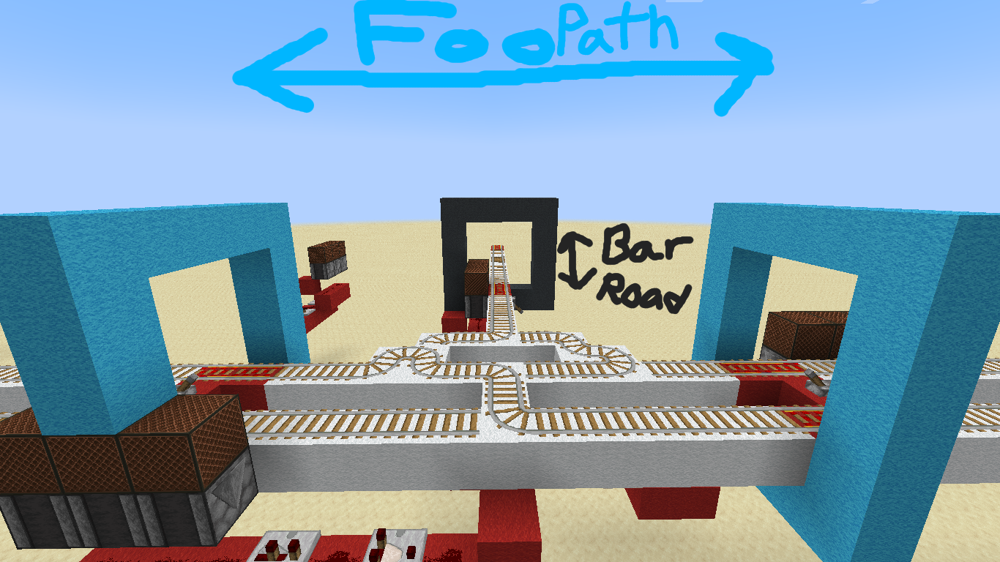
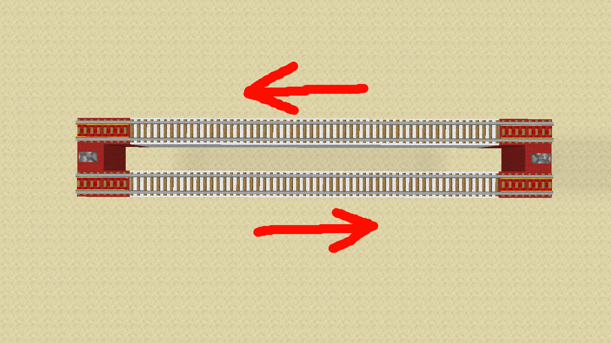

rails to keep it up to maximum minecart speed (Every 38 blocks if you are already at maximum speed).
At a stop or station, at least 2 powered rails must be used to accelerate the minecart in order to get it up to sufficient speed

At every station or intersection, each pathway is shown by its corresponding color as shown above (see Color Coding Standards)

Each minecart will keep right when going forward as shown on the image above. This is standard for ALL rails,
unless the track is mono (1 - lane) in which case the track can go both ways.

The default path at all instersections is to go straight, but if you are intersecting with a straight path,
then the default path is left, as shown in the image above.
In blue is the default path, in yellow is the path if you hit the noteblocks (oncoming from a mono rail)